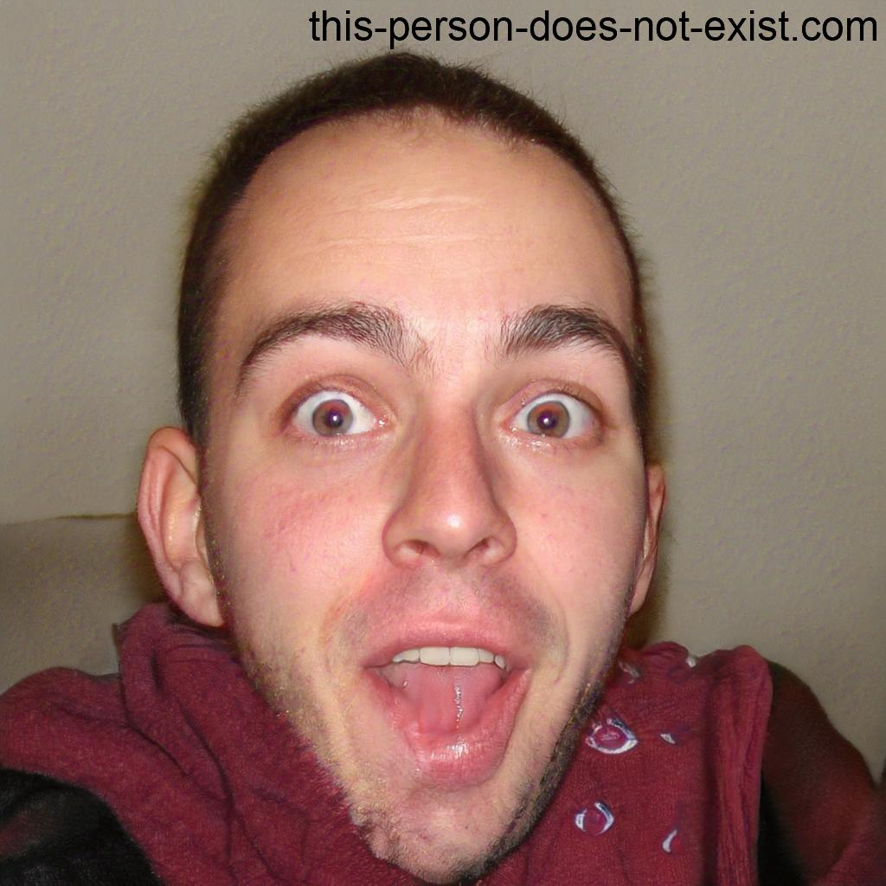

Curriculum vitae
| Idioma |
Nivel bajo |
Nivel medio |
Nivel alto |
Nivel nativo |
| Castellano |
|
|
|
X |
| Catalán |
|
|
|
X |
| Inglés |
|
|
|
X |
| Búlgaro |
|
|
|
X |
-
Bachillerato tecnológico
(2017) INS Marta Mata, Salou
-
Grado superior en Automatización y Robótica Industrial
(2021) IES Comte de Rius, Tarragona
-
Grado en Ingeniería Informática
(Cursando 2023) Universidad Rovira i Virgili, Tarragona
Finalizado 1er curso
-
Técnico de Automatización en
ABAC-CI
(Tarragona, 2020-2022)
Diseño e implementación de programas de automatización industrial.
Redacción de documentación de programas de automatización industrial.
Diseño e implementación de programas auxiliares a las tareas anteriores.